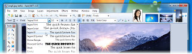

|
Roadmap and Change Log
paint.net 4.0.5 - Download, released on December 7th, 2014
This update fixes a few important bugs, some of which were introduced in 4.0.4.
- Fixed: Subtraction mode in the Magic Wand tool was generating B-A instead of A-B.
- Fixed: Crash when using Effect->Repeat.
- Fixed: Crash (AccessViolationException) on some systems when initializing the canvas for hardware accelerated rendering. It will still crash but then switch to software rendering for the next startup, which will then avoid the crashing.
- Fixed: Crash when clicking on the Shapes tool if you had run an old 4.0 beta/alpha and had also changed which shape is used at startup to be a line or curve.
- Fixed: Crash when using Settings -> Update -> Check Now due to incorrectly determining that UAC is not enabled.
paint.net 4.0.4 - released on November 29th, 2014
This update greatly improves performance in some key areas, fixes some important bugs, and reintroduces a feature that was omitted in the transition from 3.5 to 4.0.
- New: Added a 'Fill' property to the Paintbrush tool (regression from 3.5).
- Faster: Move Selected Pixels has been significantly optimized.
- Faster: Magic Wand Tool has been significantly optimized.
- Faster: Working with aliased selections ("aliased selection quality" in the toolbar) has been significantly optimized.
- Faster: Edit->Copy and Edit->Copy Merged are now up to 2x faster.
- Faster: Drawing when a selection is active; clipping performance is now improved.
- Fixed: The Text tool no longer produces terrible looking text when using Smooth rendering mode without antialiasing.
- Fixed: The Gear shape had a few glitches.
- Fixed: Using a Fill pattern with the Paint Bucket would sometimes produces misaligned or "corrupt looking" results.
- Fixed: The alignment of the menu buttons in the top-right was off by 2 pixels, causing them to look weird at high-DPI.
- Fixed: The zoom buttons in the status
bar would not recognize clicks unless the main window was
already in focus.
- Fixed: Some incorrect errors about requiring Windows 7 SP1 when launching the installer from something like an old version of WinZip.
- Fixed: Edit->Clear Selection and
Edit->Cut were filling with transparent black (#00000000)
instead of transparent white (#00FFFFFF). This caused some
discrepancies compared to older versions of Paint.NET
(regression from 3.5).
- Fixed: Pressing Ctrl+A when a drawing tool was active would sometimes incorrectly show a tinted selection.
- Fixed: Text in the title bar was not visible when using a 3rd party Aero theme with black titlebars.
paint.net 4.0.3 - released on July 22nd, 2014
This update fixes a few small bugs and improves performance.
- Further improved performance when working with images that have a lot of layers.
- Fixed some flickering in the Layers form.
- Fixed the Language selector in the Settings dialog.
- Fixed 2-finger touchpad and touch screen scrolling.
- Aero peek thumbnails now include the pixel grid if it's enabled.
- Fixed a crash in the thumbnail renderer that sometimes happened when switching between images.
- Ctrl+W no longer exits the application if zero images are open.
paint.net 4.0.2 - released on July 15th, 2014
This update fixes a few small bugs and feature regressions from 3.5.
- Fixed the gamma and contrast for text rendering on some systems where the wrong values were being used ("rainbow" text)
- Colors window now correctly lets you paste a hex color value that starts with a hash, e.g. #112233
- Gradient tool now lets you reverse a transparency gradient by clicking the right mouse button on one of the handles (regression from 3.5)
- Move Selected Pixels now lets you hold Control to leave a copy of the selected area behind on the initial move (regression from 3.5)
- Paint Bucket tool's hatch fill modes weren't working with the Overwrite blending mode (regression from 3.5)
- Fixed a keyboard tabbing issue in the Resize dialog (regression from 3.5)
- Fixed the language setting in the Settings dialog not always allowing you to set it to English if your system's default language is non-English
- Fixed a performance issue that caused images with many layers (50+) to take a VERY long time to open, close, or even switch away from (regression from 3.5)
- Fixed a rare crash at application exit
- Fixed an issue that prevented the 4.0.1 from installing on top of 4.0 when using the MSI (e.g. AD/GPO network deployment)
- Fixed an issue that would sometimes cause the installer to take 30+ seconds to appear
paint.net 4.0.1 - released on July 12th, 2014
This update is focused on fixing some important crashes, bricks,
and functionality issues, and also on a few key performance
optimizations.
- Move Selected Pixels tool performance has been
significantly optimized.
- Move Selected Pixels tool was always leaving transparent
black behind instead of the secondary color with alpha
removed.
- Brush tools with odd-sized brushes and no antialiasing
were drawing at 1 size smaller.
- Fixed some apparent ‘lag’ in the brush tools due to an
off-by-1 glitch in the stroke path calculation code.
- The brush tool preview circle no longer scales by the
system DPI setting, which made it too big.
- Removed the momentary hourglass/wait cursor after
drawing (e.g. pencil and brush tools).
- Optimized performance of the Shapes tool, especially for
the Ellipse shape.
- Paint Bucket tool will now correctly treat the selection
as a boundary contour.
- Zoom tool no longer crashes sometimes when pressing the
right mouse button while already holding the left mouse
button.
- The status bar now reports the correct selection
location when it’s outside the image boundaries (e.g.
negative values).
- Auto-scrolling on the edge of the window now works
correctly and doesn’t require you to "jiggle the mouse" for
each scroll update.
- Touch screens no longer scroll when swiping up/down with
one finger.
- Improved the pixel grid’s contrast so it’s not
overwhelmingly bright.
- The transparency "checkerboard" is now aligned to the
top-left of the image, instead of the top-left of the
canvas.
- The cursor position reported in the status bar was
off-by-1 when the value was supposed to be negative.
- Some controls (e.g. units selection in the Image->Resize
dialog) were not drawing focus rectangles when using the
keyboard.
- Fixed a crash (OutOfMemoryException) when using a
selection tool when hardware acceleration is disabled.
- Fixed a crash (TimeBeforeLastUpdateException) in the
installer. This usually happens when running in a virtual
machine, and only affects animations.
- Fixed a crash (BadImageFormatException) at startup. This
indicates an installation error, and will be automatically
repaired.
- Fixed various crashes caused by having the wrong (old)
version of PaintDotNet.SystemLayer.Native.dll. This
indicates an installation error, and will be automatically
repaired.
- Improved performance when software rendering is used
(e.g. when hardware accelerated rendering is disabled).
- All 7th generation Intel GPUs now default to hardware
rendering. All older Intel GPUs default to software
rendering.
- Fixed graphical artifacts (blackness, flickering, mouse
trails) on certain GPUs (e.g. NVIDIA Optimus).
- NVIDIA ION graphics cards now default to software
rendering due to crashes.
- Fixed an issue that was causing beta updates to be
offered even if “Also check for pre-release (beta) versions
of paint.net” was disabled in Settings
paint.net 4.0 - released on
June 24th, 2014
This release improves performance and memory usage with a new
rendering engine optimized for multicore CPUs and hardware
acceleration (GPU). Most tools now support "fine grained
history" and live adjustment of their properties, including the
Magic Wand and Paint Bucket. Selections are now antialiased,
which greatly improves their quality.
- System Requirements
- Windows 7 SP1 or newer is now required.
- .NET Framework 4.5 is now required, and will be installed if needed.
- A dual-core (or more!) processor is highly recommended.
- Hardware acceleration (GPU) via Direct2D is now supported.
- Please disable this in the Settings dialog if you experience visual artifacts.
- Performance
- A brand new, asynchronous, fully multithreaded rendering engine allows performance to scale very well with respect to the number of CPU cores whether you have 2, 4, 6, or even 16 of them.
- The responsiveness of the user interface has been greatly improved, especially when working with large images.
- Memory usage is lower.
- Improved battery life impact due to fixing the way the floating windows manage their transparency.
- Startup performance when many plugins are installed is improved, thanks to the
Multicore JIT feature introduced in .NET 4.5.
- Selections
- Selections are now antialiased, which greatly improves the quality around the edges of selected content. You can turn this on and off at any time from the toolbar.
- Everything related to selections now has much higher performance and greatly reduced CPU usage, especially if hardware acceleration (GPU) is enabled.
- The selection outline is now rendered using the "dancing ants" animation, which greatly improves the contrast between it and the image itself.
- General
- The functionality previously provided by the Utilities, Window, and Help menus has been simplified, consolidated, and moved to the top-right corner of the main window.

- The image thumbnail list has been moved up 1 row so that it no longer intrudes into the current Tool's toolbar space. This means it will no longer "jump around" when you switch between tools. This also means that it is aligned to the top of the monitor when the main window is maximized, making it easier to click on images
(Fitt's law).
- The image thumbnail list can now be reordered with drag-and-drop.
- A brand new Settings dialog makes it much easier to configure all the tool and toolbar defaults, among other things.
- The zoom slider and units selector have been moved from the toolbar to the bottom right corner of the window (into the status bar).
- Each image now shows up as its own taskbar item. This can be disabled in the Settings dialog with "Show image previews in the Windows taskbar."
- Layers can now be reordered with drag-and-drop.
- Ctrl+Click on the Move Layer Up/Down buttons will now move a layer to the top/bottom, respectively.
- Improved quality of Image -> Resize.
- Edit -> Copy Merged will copy all layers to the clipboard without having to use Image
-> Flatten first.
- Copying to the clipboard now includes the "PNG" format, which allows transparency to survive from many popular applications (e.g. Office)
- You can now use the middle mouse button to scroll/pan the image at any time (same functionality as holding down the spacebar along with clicking and dragging the mouse).
- Shift+Backspace will now fill the selection with the
secondary color (Backspace, the shortcut key for Edit -> Fill Selection, still fills with primary color as usual).
- paint.net now shows up in Windows' “Default Programs” control panel so you can configure its file type associations without reinstalling.
- EXIF rotation metadata is now applied when opening images (e.g. JPG taken with a rotated camera).
- Eleven (11) new languages, bringing the total to 21: Chinese (Simplified),
Chinese (Traditional), Czech,
Danish, Dutch, English,
Finnish, French, German, Hindi,
Hungarian, Italian, Japanese, Korean,
Lithuanian, Persian,
Polish, Portuguese (Brazilian), Portuguese (Portugal), Russian, and Spanish.
- Crash logs are now stored in %LOCALAPPDATA%\paint.net\CrashLogs (e.g. C:\Users\username\AppData\Local\paint.net\CrashLogs) instead of on the desktop.
- Effects
- New effect: Photo -> Vignette.
- Improved the quality of the Photo -> Red Eye Removal effect.
- Improved UI for Layers -> Rotate/Zoom.
- Effect plugins now show up with a jigsaw puzzle icon next to them in the menus. You can hover over the effect to see information about it, including the author and location of its DLL.
- Errors while loading effect plugins are now displayed in the Settings dialog.
- Tools
- Most Tools now support "fine-grained history." You may adjust the properties of what you've drawn (e.g. colors, toolbar settings) before committing to the layer (use the "Finish" button or press Enter), and each change is tracked in the history.
- Tools may now draw directly with a blending mode, configurable from the toolbar. All of the layer blending modes are supported, as well as “Overwrite.”

- Drawing tools (Pencil, Paintbrush, Eraser, Clone Stamp, Recolor) now have much smoother mouse input handling via
GetMouseMovePointsEx.
- Brush tools (Paintbrush, Eraser, Clone Stamp, Recolor) now have soft brushes support via a “Hardness” setting in the toolbar.
- The Move tools (Move Selected Pixels, Move Selection) have a much better UI for scaling, moving, and (especially) rotation.
- The Move tools now support moving the rotation anchor, which changes the center of rotation.
- The new Shapes tool replaces the Rectangle, Rounded Rectangle, Ellipse, and Freeform shape tools. 27 shapes are currently available. You may move, resize, and rotate a shape, as well as reconfigure any other properties from the toolbar (color, outline size, etc.) before committing it to the layer.
- Color Picker has a configurable sampling radius, and can sample from either the current layer or the whole image.
- Gradient tool now supports a new Spiral gradient type and allows configuration of the repeat mode (none, repeat, wrapped).
- Gradient tool has improved rendering quality via dithering and antialiasing. You can control both of these with the standard antialiasing toggle in the toolbar.
- Magic Wand and Paint Bucket now allow live adjustment of Tolerance and the Origin (click location) after clicking (press Enter to commit/finish).
- Magic Wand and Paint Bucket can now sample from either the current layer or the whole image.
- Paint Bucket tool now supports anti-aliasing.
- Recolor tool can now use the color of the pixel where you click as the color to be replaced. Or, as usual, it can use the secondary color.
- Text tool now supports multiple rendering modes: Smooth, Sharp (Modern), and Sharp (Classic). These correspond to DirectWrite rendering modes of Outline, ClearType Natural Symmetric, and GDI Classic, respectively.
- Text tool now supports colored fonts on Windows 8.1.
Paint.NET v3.5.11 -
released on August 17th,
2013
The primary goal of this update is preparing for the v4.0 release: previous versions of Paint.NET will not be able to offer the v4.0 update.
Also included are some small fixes and performance improvements that have been ported over from the v4.0 codebase.
- Fixed: The Gaussian Blur effect was incorrectly calculating alpha values for non-opaque pixels.
- Improved performance of the Sharpen effect by about 25%
- Improved performance of the Median effect by about 30%
- Improved performance of the Fragment effect by about 40%
- Improved performance of the Unfocus effect by about 100%
- Reduced memory usage when many selection manipulation operations are in the history/undo stack (the undo data is now saved to disk)
- The built-in updater now supports upgrading to paint.net 4.0 (when it's available)
Paint.NET v3.5.10 -
released on October 9th,
2011
This update fixes some broken shortcut keys for the View -> Actual Size command.
- Fixed: Ctrl+Shift+A now works again as a shortcut for
View -> Actual Size (broken in 3.5.9)
- Fixed: Ctrl+0 still works for View -> Actual Size even
if 10 or more images are open (broken in 3.5.9, it would
switch to the 10th image).
Paint.NET v3.5.9 -
released on October 1st,
2011
This update improves the "Auto-Detect" bit-depth
feature, and fixes a few small issues.
- Improved: The "Auto-detect" bit-depth setting for PNG,
BMP, and TGA now also determines which bit-depth to use
based on which one produces the smallest file size, as well
as which ones can save the image without losing fidelity.
- Improved: You can now use Ctrl+0 as a shortcut key for
View -> Actual Size, in addition to Ctrl+Shift+A and
Ctrl+Alt+0.
- Fixed: Some text in the DirectDraw Surface (DDS) Save
Configuration UI was not being loaded.
- Fixed: Some DirectDraw Surface (DDS) files authored with
other software (e.g. Unreal 2004) could not be loaded.
- Fixed: In some rare circumstances, clicking on the Save
button in the toolbar would crash.
- Fixed: The Korean translation has been added back in, with the
help of Bing machine translation to cover the few remaining
strings that were untranslated.
Paint.NET v3.5.8 -
released
on March 5th, 2011
This update fixes some issues with the
fault-tolerant save feature introduced in 3.5.7.
- Fixed: Saving to a folder that has been moved or renamed
will display an error instead of crashing (regression from
3.5.6)
- Fixed: Saving to a Sharepoint site will now work
(regression from 3.5.6)
- Fixed: Saving to a file that is marked as read only will
now give an error instead of crashing (regression from
3.5.6)
- Fixed: General reliability and correctness improvements
to fault-tolerant saving
Paint.NET v3.5.7 -
released
on February 20th, 2011
This update improves reliability of saving, further improves Copy/Paste functionality, and fixes some other miscellaneous bugs.
- Saving an image is now fault-tolerant. If there is an
error or crash while saving, the original file will be left
alone.
- Worked around a bug in some plugins that are incorrectly
using the built-in Gaussian Blur effect. For example,
Sharpen+. Now they won't crash.
- Fixed a bug with Edit->Paste into New Image, where the
new image would be 1 pixel too wide or tall, as reported at
http://forums.getpaint.net/index.php?/topic/20969-paste-problem/
- Fixed a bug with the Rectangle Select tool and Fixed
Ratio selection, which would be off by 1 pixel, as reported
at
http://forums.getpaint.net/index.php?/topic/20820-croppig-by-fixed-ratio-is-inexact
- When pasting an image from Paint.NET into Paint.NET, it
will be a little smarter about where it puts the image.
Previously, if the location wasn't within the viewport, it
would be placed at the top-left corner of the viewport. Now
it will find the nearest point along the edge of the
viewport to place the image.
- The EXIF rotation ("orientation") metadata is now
discarded when opening an image, which was causing
aggravation with images that could then never be reoriented
correctly using Image->Rotate
- The EXIF metadata for JPEG thumbnail data are now
correctly discarded.
- Fixed a handful of memory leaks.
- Fixed a typo in the Italian translation. In the setup
wizard it was referring to "Pain.NET" (woops)
Paint.NET v3.5.6 - released
on November 18th, 2010
This update fixes several issues
related to copy-paste, improves performance and quality for a
few adjustments, and fixes a data loss bug.
-
When pasting an image, Paint.NET will be smarter
about ensuring it is placed within the area that has been
scrolled/zoomed to.
- Improved the performance and quality of the Curves and
Hue/Saturation adjustments.
-
Some minor improvements to memory usage, which
should help out a few scenarios on 32-bit systems.
- Fixed: If a JPEG was loaded that had an embedded ICC
profile, and was then saved as an 8-bit or 24-bit PNG, then
the resulting file would be corrupt (32-bit PNG worked fine
though).
- Fixed: 16-bit TGAs no longer load with the red and blue
channels swapped.
- Fixed: Copy-paste from a Remote Desktop session will no
longer be 'shifted' by 3 pixels.
- Fixed: Copy-paste from Internet Explorer, Firefox, or
Chrome should preserve alpha/transparency.
- Fixed: Copying from Paint.NET and pasting into Windows
Live Writer should now work.
- Fixed: Taking a full-screen screenshot with Print Screen
on a multimonitor system, where those monitors don't form a
simple rectangle, will now fill the 'gap area' with
transparent instead of black. (Example: two monitors of the
same size, one of which is rotated by 90 degrees)
- Fixed: If Paint.NET is opened without specifying an
image to open, and then the default image is modified and
saved, then Paint.NET will no longer close it upon
opening another one. This was causing data loss if that
default image had layers, and was then saved in a format
that did not support layers (anything other than .PDN).
- Fixed: Some systems were showing 'red X' thumbnails for
.PDN files in Windows Explorer, instead of the real
thumbnail.
- Fixed: The EXIF "Creation Software" saved along with
images is no longer localized. This prevents certain
languages from seeing "Paint.NET ????? v3.5.6" in the image
properties (metadata).
Paint.NET v3.5.5 -
released
on April 25th, 2010
This update fixes a bug when saving 8-bit images, improves
layer composition and Gaussian Blur performance, and is now updated
to support the new .NET Framework 4.0 in some cases.
-
Fixed the bug where saving as 8-bit PNG/GIF/BMP wasn't
always working, usually with larger images.
- Improved the performance of the Gaussian Blur effect by
30-40%.
- Improved the performance of all the layer blending modes
by 15-30%.
- Improved the performance of zooming with the mouse wheel
on dual-core Intel Atom systems.
- Updated to support .NET 4.0 if no other version of .NET
is installed.
- Reduced download size from 4.8MB down to 3.5MB.
- Fixed a small error in the Chinese translation.
Please note that the system requirements have
been updated. For Windows XP, you must now have
Service Pack 3 (SP3) installed; SP2 is no longer
supported. For Windows Vista, you must now have Service
Pack 1 installed.
Paint.NET v3.5.4 -
released on
February 25th, 2010
This update fixes a few small bugs, and
improves performance of the Flatten command.
- Improved performance of the Image->Flatten command by
making it multithreaded.
- Fixed the File->Save As dialog not opening to the
correct folder.
- Fixed a crash with certain plugins and their use of the
File Open dialog.
- Fixed a very rare crash with the toolbar's font list.
Paint.NET v3.5.3, released on
February 7th, 2010
This update fixes a few small bugs.
- Fixed DirectDraw Surface (.dds) file format support for
CPUs which do not have SSE2 (Pentium III, Athlon XP).
- Fixed an issue with the File->Save dialog related to
file type plugins that were only written for opening
(importing).
- Fixed some crashes which were supposed to be "out of
memory" errors.
- Fixed a race condition with the New Image, Canvas Size,
and Resize dialogs. If you typed extremely fast you could
cause a crash by typing a negative number and immediately
pressing OK or Enter.
-
Fixed a File->Save dialog issue in Win7/Vista where it could
ask you about overwriting the wrong file.
Paint.NET v3.5.2, released on
January 4th, 2010
This update resolves some feature
disparities in the Text tool between GDI (XP) and DirectWrite
(Win7/Vista). It also improves overall performance, as well as
the correctness and quality of the Move Selected Pixels tool,
the Image->Resize function, and the Hue/Saturation adjustment.
- All font face variants (e.g., Arial vs.
Arial Narrow) are now available with the Text tool in
Win7/Vista with DirectWrite.
- Bitmap font types (e.g. Courier,
Terminal, Fixedsys) are now available with the Text tool
in Win7/Vista.
- Fixed some bad text kerning with the
Text tool at small font sizes when antialiasing was
turned off.
- For the Image->Resize function, the
quality, correctness, and performance of Bilinear
and Bicubic sampling modes have been improved. Super
Sampling also has some performance improvement.
- Improved the rendering quality for
the Hue/Saturation adjustment. Also made a new icon for
it.
- Fixed many subtle rendering issues
with the Move Selected Pixels tool. These were apparent
when flipping or rotating a selected area.
- Fixed: The Line/Curve tool was
applying pixel snapping to the curve nodes, which caused
lines to "bend" when using the Shift key to constrain
the angle.
- Fixed some extraneous CPU usage
related to unnecessary or redundant thumbnail updates.
- Fixed a few dialogs that looked wrong
with Aero glass with Remote Desktop or Virtual PC.
- Fixed a nasty memory leak with
Flatten followed by Undo.
- Fixed some issues related to effects
that took awhile to cancel. As it turns out,
drag-and-drop was enabled at this time, which easily lead to crashes or hangs.
- Some Win7 systems could not detect
that .NET 3.5 SP1 was installed, even though it was. A
fallback detection function has been added.
- For plugin authors, the Effect class
now has a pollable IsCancelRequested property. This can
be used to improve responsiveness for expensive
OnSetRenderInfo() implementations which are otherwise
non-interruptible.
- For plugin authors, the
Surface.FitSurface() method is now optimized to use
multiple threads, which improves
performance.
Paint.NET v3.5.1, released on
November 19th, 2009
This update adds a new feature for
Windows 7 users, and fixes many small issues that have been
found since 3.5's release.
- New: For Windows 7,
added taskbar progress reporting for long running operations
(effects, adjustments, Image->Resize, save, install)
- Made some corrections to the French
translation
- Running setup with /auto will
no longer launch Paint.NET when it's done
- Fixed an issue where Paste into
New Image would refuse an image on the clipboard, even
if regular Paste would take it
- Fixed a race condition with
Edit->Paste and Image->Resize whereby it would take up
100% CPU and take between 1 minute to 1 hour to finish
- Fixed an issues with Copy/Paste
where it would leave an extra line of transparent pixels
on the left, top, right, and/or bottom edges
- Fixed lag with the paintbrush
tool that was being seen on some systems
- Fixed some issues with the
paintbrush and eraser tool being misaligned when zoomed
in
- Fixed a crash that would happen
at (seemingly) random times, such as after drawing with
the paintbrush tool, on some systems
- Fixed a minor and obscure
rendering glitch with the Move Selected Pixels tool
- Fixed an issue with glass over
Remote Desktop or Windows 7 Virtual PC
- Fixed a minor glitch whereby the
"Unsaved Changes" confirmation dialog could never finish
rendering the image thumbnail if one of the Move tools
was active
Paint.NET v3.5, released on November 6th, 2009
This release focused on improving performance reliability, reducing memory usage, upgrading to the latest .NET
Framework version, and refreshing
the user interface for Aero and glass (Windows 7 / Vista).
- New: Refreshed user interface with new icons and visual
styling. On Windows 7 and Vista, it is enhanced for Aero and
"glass".

- New effect: Blurs ->
Surface Blur, by Ed Harvey
- New effect: Distort -> Dents,
by Ed Harvey
- New effect: Distort -> Crystalize, by Ed
Harvey
- New: Russian translation.
-
Performance and memory usage have been extensively
optimized throughout the entire program.
- .NET
Framework 3.5 SP1 is now required, which has many built-in
performance improvements.
-
Disk space usage has been reduced by
about 12MB by using NTFS compression on installation files
related to staging (.MSI) and diagnostics (.PDB).
- Compression for .PDN
images has been improved.
- Effect dialog responsiveness has been improved.
- Images open much faster, especially on
single CPU systems.
- Startup
performance on most systems will be better by about 20%.
- Memory
usage has been reduced when more than one image is
open.
- Rendering
quality has been greatly improved when zoomed in.
- The selection
outline is no longer animated. Instead of "dancing
ants", a context-sensitive "XOR" stipple pattern is
drawn. This has allowed for improved performance and
lowered CPU consumption (and longer battery life).
- The font
manager for the Text tool has been
completely rewritten, which fixes many problems seen with
crashes and missing fonts.
- On Windows XP, the Text tool has improved
reliability and font selection (it
uses GDI instead of GDI+).
- On Windows 7, the Text
tool will use DirectWrite (instead of GDI) which gives better performance and
greatly improved quality. On Windows Vista, you may
install DirectX 11 to enable this feature; otherwise GDI
will be used.
- The toolbar font
list has improved usability, rendering quality, and
significantly improved performance.
- The toolbar
font list no longer requires an application restart to
recognize newly installed fonts.
- When many fonts are
installed, both memory usage and startup performance
have been greatly improved.
- It is now drastically easier to move a very small
selection.
- All installation
prerequisites are now installed automatically, such as .NET
and Windows Installer.
- Updates are now downloaded in the
background, and installed after you exit the
application. In previous versions, this was a foreground
task and you could not use Paint.NET while the update was
downloaded.
- Added a
"Utilities" menu. Updates, Languages, and Plugin Errors have
been moved there.
- Added a "Manage Fonts" command to
the Utilities menu. This will launch the built-in Windows
font control panel.
- Clicking the middle mouse
button on an image thumbnail will now close the image.
- Improved
the Unfocus effect.
- The DirectDraw Surface (.DDS)
file type now allows you to select the resampling algorithm
for auto-generated mip-maps.
- A processor that
supports SSE is now required (almost all CPUs purchased this
decade satisfy this).
- Fixed an issue with Gaussian
Blur and its treatment of alpha values.
- Fixed a
crash with the "Units" selector in the toolbar.
- Fixed a crash due to an overflow that
prevented very large images from working (64-bit only).
- Fixed many other miscellaneous glitches and crashes.
- The Korean translation has been removed.
Sadly, we were unable to find the resources to complete
this.
Paint.NET v3.36 Released:
August 26th, 2008 -
Download
This is mostly a servicing release to make some small
improvements and to fix a few important bugs.
- Improved: Effect rendering should be a
little faster now.
- Changed: Implemented some changes to
the "Add Noise" effect that were suggested by a forum
member.
- Changed:
The canvas background color is now always #c0c0c0.
- Changed: The auto-updater should now
correctly detect .NET 3.5 and newer, which will help to save
bandwidth when Paint.NET v4.0 is released (it will require
.NET 3.5).
- Fixed: Paint.NET now works on a system
that has the .NET 3.5 SP1 "Client Profile" installed.
- Fixed: When zoomed in and the
cursor is to the top-left of the image (negative
coordinates), the ruler is now highlighted in the correct
area.
- Fixed: The effect rendering system no
longer sets the "Tag" property on the configuration dialog.
- Fixed: Some incorrectly authored
plugins would cause a crash when loading their support
details (author, copyright, etc.).
- Fixed: There was a bug in the color
wheel for IndirectUI that caused it to show the wrong values
at initialization.
- Fixed: There was a performance problem
for effects that used the IndirectUI color wheel control.
- Fixed: In some rare cases, Paint.NET
would crash while shutting down.
- Fixed: When using the "Fixed Ratio"
feature of the Rectangle Selection tool, it would crash if 0
was specified for both the width and height.
Paint.NET v3.35 Released:
July 7th, 2008
This releases introduces a new Posterize adjustment, a new
Intersect selection mode, dramatically improved
performance for selection editing, and several small bug fixes.
- New:
Posterize adjustment, by Ed Harvey.
- New: Intersect selection editing mode.
-
Improved: Dramatically improved
selection editing performance for the Add and Subtract modes
(and also for Intersect). The performance used to be
dependent on image size, and thus was often unusable on
images larger than 1024x768 pixels. It is now dependent only
on selection complexity (number of polygon edges) -- the
improvement is generally between 3x and 1000x.
- New: When holding Ctrl or Alt for a
selection tool, the cursor now has a plus or minus
indicator.
- Changed: The canvas background is now a
solid color instead of a gradient. The gradient was causing
certain tone misjudgments related to bright versus dark
colors.
- Changed: Shortcut key for Sepia is now Ctrl+Shift+E. The
shortcut for Posterize is now Ctrl+Shift+P.
- Changed: Hotkeys for selection modes
are now Left click for Replace, Control+Left click for Add
(union), Alt+Left click for Subtract (difference), Ctrl+Left
click for Intersect, and Ctrl+Right click for Invert (xor).
- Changed: When using a selection mode
other than "replace", it will now draw the selection outline
so that you can see both the original and resulting
selection areas. Before, it would only draw the resulting
selection area outline, which made modes such as Intersect
hard to use.
- Fixed: The Resize dialog had some
rounding errors with the "Maintain aspect ratio" feature,
which caused a few discrepancies and even a spurious "out of
memory" error.
- Fixed: Some quirks with the Color Wheel
control for IndirectUI-based effect plugins.
- Fixed: Several miscellaneous and rare
crashes.
- Fixed: The installer would display a
bizarre error if a "blank" install folder was attempted.
- Fixed: The installer now only accepts
absolute path locations, instead of relative ones. This
fixes an ambiguity between where Paint.NET believes it is
installing itself to, and the directory that Windows
Installer actually uses.
- Fixed: Sometimes pasting would result
in a crash when certain types of malfored data were on the
clipboard.
- Fixed: It was possible to get around
some of the protections imposed by the IndirectUI system.
This was causing instability with some effect plugins such
as "Fern Fractal".
- Fixed: There were some issues with the
implementation of "linked" sliders for effects
based on IndirectUI.
Paint.NET v3.31
Released:
May 1st, 2008 -
Download
This is mostly a servicing release to fix a few important bugs.
- New: Enabled integration
with Window
Clippings, which is a high quality screen capture
utility by Kenny Kerr.
- Fixed: Fixed a crash
with the Open/Save dialogs if the Documents or Pictures
directories were either inaccessible or if the user did not
have certain file system permissions.
- Changed / Fixed: The
hotkey for Adjustments -> Levels is now Ctrl+Shift+L instead
of Ctrl+Alt+L. This was preventing certain characters, such
as the Polish 'ł', from being typed.
Paint.NET v3.30
Released:
April 10th, 2008
This
release adds an Italian translation, a new "Fragment Blur" effect,
and the
ability to save PNG images at 8- and 24-bit color depths. For
developers, the IndirectUI system has some new controls, some
new constraint rules, and can now be used for file type plugins.
- New: Italian
translation.
- New: Ability to save
PNG's at 8- and
24-bit color depths.
- New: Ability to save
BMP's at 8-bit color depth.
- New: "Auto-detect"
bit-depth option for PNG, BMP, and TGA file types. It will
analyze the image and determine the lowest bit-depth that
can still save the image without quality loss.
- New: "Fragment" blur
effect, by Ed Harvey
- New: The "Polar
Inversion" distortion effect has been enhanced to allow
changing the rendering offset, and the behavior for "edge"
pixels (clamp, reflect, or wrap).
- New: For developers, added a Color
Wheel control to IndirectUI for use in effect plugins.
- New: For developers, added ability to
customize certain properties of the effect configuration
dialog via IndirectUI.
- New: For developers,
IndirectUI can now be used to write configuration
UI for file types.
- New: For developers,
IndirectUI has a new radio button control type for
enumerations, and some new property constraint rules.
- Changed: Most effects and adjustments,
including plugins that use IndirectUI, have been visually
refreshed. The new look is cleaner and more compact. These
changes are shown in more detail at
http://blog.getpaint.net/2008/03/10/cleaning-up-the-ui-for-paintnet-v330/
- Fixed: Various UI issues with the
Levels adjustment.
- Fixed: When pasting text into the Text
tool with Ctrl+V, it would hide the nub for moving the text.
- Fixed: If the startup tool was set to
the Zoom or Pan (Hand) tool, then the toolbar would render
incorrectly.
- Fixed: Thumbnails for PDN images now
include transparency, which improves their appearance in
Windows Vista.
- Fixed: In some cases, an exponential
property slider would get "stuck" at some values when using
up/down keyboard keys. This mostly affects some effect
plugins.
- Fixed: When using keyboard navigation,
sometimes the File menu would scroll its items out of view.
- Fixed: Some crashes that were tracked
down to out-of-bounds coordinate values in certain effects.
- Fixed: The installer
would fail if Paint.NET had never been installed before, and
was being installed to any non-default directory. This bug
only affected version 3.22.
Paint.NET v3.22
Released:
January 12th, 2008 -
Download
This release fixes a few minor bugs and adds a new, much-needed
Reduce Noise effect.
- New: "Reduce Noise" effect.
- Changed: Ctrl+W will now close Paint.NET if zero images are open.
- Fixed: In Windows XP, when launching web content, sometimes Internet Explorer was used instead of the user's chosen default browser.
- Fixed: The Unfocus effect was not handling alpha values properly.
- Fixed: The Brightness / Contrast adjustment was only displaying its text in English.
- Fixed: The /auto parameter for the installer now correctly allows for an automated installation. This was
inadvertently broken in 3.20.
Paint.NET v3.20 Released: December 12th, 2007
This release adds numerous enhancements and tweaks to the
built-in effects, a re-organized Effects menu, a new and much
easier system for effect plugin development,
better error handling for plugins, and the ability to draw Fixed
Ratio and Fixed Size selections with the Rectangle Select tool.
It also includes the customary list of tweaks and fixes.
- Rectangle Select tool can now draw selections based on a
Fixed Size or Fixed Ratio setting.
- The selection combination mode is now accessible from
the toolbar (Replace, Add, Subtract, Invert ("xor")).
- The "flood mode" for the Magic Wand and Paint Bucket
tool are now accessible from the toolbar (Continuous, or
Global).
- Reorganized the Effects menu so that all effects are
classified under submenus named Artistic, Blurs, Distort,
Noise, Photo, Render, and Stylize.
- Improved rendering quality for the Motion Blur
effect.
- Enhanced the Radial Blur effect so that the center of
blurring can be chosen, as well as the quality.
- Enhanced the Zoom Blur effect so that the center of
zooming can be chosen.
- Enhanced the Bulge distortion effect so that the center
of "bulging" can be chosen.
- Enhanced the Frosted Glass distortion effect in several
ways: 1) performance has been improved from between 1,000%
to 10,000% depending on image size and property settings, 2)
the scatter radius can now be set up to 200 pixels, 3) a
"minimum" scatter radius can be chosen, 4) a smoothness
setting is now available.
- Enhanced the Tile Reflection distortion effect by adding
a Quality property.
- Enhanced the Twist distortion effect by 1) allowing
counter-clockwise twisting, 2) allowing the size of the
twisted area to be configured, 3) allowing the
location/center of twisting to be chosen.
- Enhanced the Add Noise effect by adding a "coverage"
property.
- New Mandelbrot Fractal and Julia Fractal render effects.
- New IndirectUI system for plugin authors so that they
can develop much more sophisticated effect configuration
dialogs with a fraction of the amount of work that used to
be required.
- If an effect plugin crashes, it is much more likely that
Paint.NET will be able to recover from the error.
- The option to restart Paint.NET will then be provided as
a recommended course of action.
- If an effect plugin fails to load, or is blocked from
loading, then a "View Plugin Load Errors..." item will be
added to the File menu which can be clicked on to show the
error and/or diagnostic information.
- Improved the cursors for the Magic Wand and Paint Bucket
tools.
- Ctrl+Alt+0 now works for View->Actual Size (aka, "Zoom
to 100%"), which is a shortcut key that other software uses
(e.g., Photoshop).
- Updates are now installed faster by only creating one
System Restore point instead of two (it used to implicitly
create one for uninstall, then one for the reinstall).
- Lots of little bug fixes.
Paint.NET v3.10 Released: August 23rd, 2007
This release adds two new
effects originally written by David Issel ("BoltBait"), support for the DDS filetype originally
written by Dean Ashton, as well as many small bug fixes and some visual fit and finish.
- New: Soften Portrait effect, by
David Issel,
http://www.BoltBait.com .
- New: Ink Sketch effect, by David
Issel,
http://www.BoltBait.com .
- New: DirectDraw Surface (DDS) file
format support, by Dean Ashton,
http://www.dmashton.co.uk/ . Improved from the original
source code by optimizing the DXT compression library
("Squish") to take advantage of multiple cores /
processors.
- New: "Paint.NET Search", available
from the Help menu (shortcut key is Ctrl+E), allows you to
search for Paint.NET help, forum posts, tutorials, plugins,
and other related material:
http://searchpaint.net (Note: This feature is only
available in English.)
- Improved: Visual fit-and-finish
for the Layers window.
- Improved: Visual fit-and-finish
for the close / 'X' button on image thumbnails.
- Improved: Small (about 5-10%)
performance improvements for some effects such as Oil
Painting, Frosted Glass, and Gaussian Blur.
- Improved: Increased max brush size
to 500, as per forum members request.
- Improved: Expanded list of
available font sizes up through 288.
- Changed: The keyboard shortcut key
for the Color Picker is now 'k'. This makes it so that the
toolbar option, "After click: Switch to previous tool", is
not useless for those using the keyboard shortcuts.
- Fixed: In some cases, undoing an
action that removed a layer would result in the un-removed layer not showing up until you resized the Layers window
("ghost layers").
- Fixed: Pressing F1 from the main
window no longer launches the online help in two browser tabs.
- Fixed: Adding a new layer now adds
it above the currently active layer, instead of at the very
top of the layer list.
- Fixed: Merge Down now activates
the merged layer instead of the one above it.
- Fixed: In Vista, clicking on a URL
link from the installer will no longer launch the web browser with inherited,
elevated privileges.
- Fixed: Pressing Ctrl+[ no longer
cancels out of drawing a line/curve, but instead decreases
the brush size by 5 as expected.
- Fixed: Ctrl+clicking on the brush
size +/- buttons now changes the brush size in increments of
5.
- Fixed: Save Configuration dialog
would "creep downward" from its last position every time it
was opened again.
- Fixed: TGA codec now saves the #
of alpha bits to the image descriptor byte. This was causing
some other applications to load TGA files saved with
Paint.NET as solid black images.
- Fixed: Clicking the 'X' to close
the Layer Properties dialog was not reverting changes made
to the layer while the dialog was open.
- Fixed: Installation will not
proceed unless Paint.NET is closed, and will also not allow
Paint.NET to be opened until installation is completed. This
helps to ensure a fully coherent and complete installation
or update.
- Fixed: If a file failed to open,
and there were no open images, and the user pressed either
the Zoom In or Zoom Out toolbar buttons, then Paint.NET
would crash.
- Fixed: In Vista, it was possible
to crash the Save As dialog by typing a filename that was
too long.
- Fixed: In Vista, it was possible
to crash the updater if you let the UAC prompt time-out.
- Fixed: It was possible to crash
Paint.NET on some systems by clicking on a tool in the Tools
window while the "Save As" dialog was open.
v3.08 Released: June 1st, 2007
This is mostly a service release that fixes some bugs, while
also improving keyboard / accessibility cues for some dialogs.
- Fixed: Pasting an image from Office 2003
applications now works (e.g. Excel 2003 graphs).
- Fixed: Some dialogs were not indicating which
command button was the default. These buttons now have a
highlight to indicate which one will be activated if the
user presses Enter or Space.
- Fixed: Some minor keyboard navigation issues with
task dialogs
- Fixed: Performance issue with the File->Acquire
submenu taking a long time to appear
- Fixed: Window activation issue when the Print
wizard was finished / closed
- Fixed: Crash when there was 1 image open and the
user pressed Ctrl+Q and then Ctrl+W
- Fixed: Minor performance issue if the user had 1
modified image open and then canceled the "Save changes?"
dialog
- Fixed: Misbehaving filetype factory
implementations (plugins) will no longer cause a crash
v3.07 Released: May 8th, 2007
This update enhances the Line/Curve tool, significantly reduces
the download size, and fixes some bugs related to opening and
saving files in Windows Vista.
- New: Line/Curve tool has been enhanced to allow
drawing arrowheads, and to draw with various dashed- and
dotted- styles.
- New: Image tab thumbnails now have an indicator
if the respective image has unsaved changes (an orange
asterisk is shown).
- Improved: The Save Configuration dialog (choose
JPEG quality, etc.) now allows you to maximize it. It also
remembers its relative location and size.
- Changed: The help file / documentation is now
hosted online. This has reduced the download size by more
than 3 MB, and will also allow us to provide translations
without ballooning the size of the download (each language
would have added between 2 and 4MB).
- Changed: The "image list button" (downward
triangle) is also shown when only 1 image is open (it used
to only display if 2 or more images were open). This is
being done for the sake of consistency.
- Fixed: Some operations would reset the selected
layer to the first/lowest layer. This selection is now
preserved.
- Fixed: The Image->Rotate commands no longer hang
if a selection was active.
- Fixed: Several problems have been fixed within
our implementation surrounding the new Vista Open/Save
dialogs. This includes: opening an image from an http://
source, opening images from a digital camera that is not
mapped to a file system path (such as a drive letter), the
Save dialog not always prompting you about overwriting an
existing file, and many corner cases that previously caused
crashes.
v3.05 Released: March 29th, 2007
This is a minor update that adds a new effect, improves certain
parts of the user interface, and fixes a few minor bugs.
- New: Pencil Sketch effect
- New: In Windows Vista, the new-style Save/Open
dialogs are used. Among other things, this enables Search
functionality.
- Changed: The View->Units, Image->Flip,
Image->Rotate, and Layers->Flip submenus have been
"flattened" (their commands were moved out into the View,
Image, Image, and Layers menus respectively)
- Improved: Download size reduced by about 300 KB
by using
PNGOUT
- Improved: Some uses of confusing "MessageBox"
style dialogs have been changed to a much friendlier "TaskDialog"
style interface
- Improved: When changing the language, Paint.NET
can now restart itself automatically
- Improved: Better performance for Move Selected Pixels
tool for quad-core systems. This issue is documented and
explained here,
http://blogs.msdn.com/rickbrew/archive/2007/03/01/paint-net-many-core-performance-scaling-analyzed.aspx
- Removed: The "Clear History" button has been
removed because it was not very useful
- Fixed: Sometimes the Colors window would get
"lost" between sessions of Paint.NET
- Fixed: Stack-overflow crash when using certain
effects, such as Gaussian Blur, on very large images with
certain settings (such as a 200 pixel radius)
- Fixed: When cancelling the multi-image Unsaved
Changes dialog, the input focus was sometimes confused
- Changed: Renamed PdnLib.dll to
PaintDotNet.Core.dll
- Fixed: Very rare race condition in background
thumbnail renderer
v3.01 Released: February 26th, 2007 -
Download
This is a small update that fixes a few bugs that have been
found since 3.0 was released.
- Fixed: Crash when trying to save a palette with a blank name
- Fixed: Changing an image's DPI
resolution did not set its "dirty" flag (you would not be
asked to save changes)
- Fixed: Error messages at startup were covered by the splash
screen
- Fixed: Crash when a modal dialog was open (such as an
effect) when the user tried to logoff/restart/shutdown Windows,
and they chose to save their images
- Mitigated some CPU usage issues when the app was minimized
and a complex selection was active
v3.0 Released: January 26th, 2007
This major release introduces a new
multi-document interface (MDI), availability in 8 languages, a
highly-requested interactive gradient tool, four new effects, a
user-definable color palette, lower disk space usage for scratch
files, and a generally cleaner and improved user interface. What's new in Paint.NET v3.0?
- Simple and intuitive tab-based multi-document user interface

- Now available in 8 languages: English,
Chinese (Simplified), French, German, Japanese, Korean,
Portuguese (Brazil), and Spanish
- Interactive Gradient Tool that
makes it very easy to draw and then fine-tune placement and
coloring of a gradient.
- User-definable color palette (as opposed
to just the color wheel)

- New effects: Clouds, Median, Unfocus,
Outline, and an improved Sharpen
- More intuitive and more powerful toolbar
- Generally improved and cleaner user
interface
- History files are now compressed to save
disk space, reduce disk activity, and improve performance.
- "Merge Down" layer command
Please note that Windows
2000 is no longer supported. Paint.NET v3.0 will not install
unless your operating system is Windows XP SP2 or newer.
Paint.NET v2.7x
v2.72
Released: August 31st, 2006
This small release adds a new effect and fixes a few small bugs.
- New effect: Zoom Blur
- Fixed: DPI was not being saved or loaded correctly for
file types other than PDN and JPEG
- Fixed: Text Tool now works with Alt+#### special
character entry without moving the cursor
- Fixed: Loading PNG images with alpha was often resulting
in incorrect, off-by-1 color values
v2.70
Released: August 2nd, 2006
This is a small interim release that includes many of the
popular effect plugins we have written that users have enjoyed
using with Paint.NET v2.6x. We have decided to release this as a
".1" update now so that more users may benefit from these
plugins, as opposed to waiting until the final release of v3.0
to include them (which could be awhile).
With this release we have also refreshed Paint.NET's system
requirements. We now list 256 MB as the minimum memory required
instead of 128 MB. This is in line with what we have seen to be
a more reasonable minimum system for using Paint.NET. Also,
Windows XP users must now have SP2 installed (SP1 was required
before), Windows 2000 users must have SP4 installed (SP3 was
required before), and Windows Server 2003 users must have SP1
installed (no SP was required before).
- New effect: Glow
- New effect: Bulge
- New effect: Polar Inversion
- New effect: Tile Reflection
- New effect: Twist
Paint.NET v2.6x
v2.64 Released: July 8th, 2006
This small updates fixes a few minor bugs, and improves Windows
Vista compatibility. As a bonus, it also adds much better GIF
save quality.
- Improved GIF save quality by implementing
Floyd-Steinburg error diffusion algorithm
- Printing now works in Windows Vista
- Fixed a startup performance problem on
some systems that was an artifact of the way the .NET
Framework was verifying Authenticode signatures as part of
its assembly loading process
- Executable files now have UAC manifests
to ensure proper execution privilege and to disable file and
registry virtualization in Windows Vista
v2.63 Released: June 4th, 2006
This small update fixes some more relatively minor bugs, and
makes the built-in updater much more convenient in Windows
Vista.
- Built-in updater now works in Vista
without having to use "Run as Administrator" beforehand (UAC
permission is still required to install updates)
- Fixed a color intensity calculation that
had Red and Blue swapped (affects Brightness/Contrast
adjustment, and some plugins)
- Fixed .PDN images with transparency
having a black background in their Explorer thumbnail
- Fixed crash when an image has bizarre DPI
settings (such as 6 billion DPI)
- Fixed crash when an image has an invalid
resolution unit specified (neither pixels, inches, nor
centimeters)
- Fixed a few rare race conditions which
resulted in crashes
- Fixed a rare crash with the history
- Fixed crashlog being created when the
updates dialog appears over another modal dialog
- Fixed crashlog not reporting application
version with certain damaged installations
- Placed a clickable
Windows Live OneCare
ad in the Setup wizard that expires on July 10th, 2006
v2.62 Released: May 10th, 2006 -
Download
This small update fixes some bugs, and improves the user
experience on some Windows Vista systems.
- Small icon (16x16) is brand new,
redesigned so that it is clearer
- Application resolution is no longer
virtualized in high-DPI mode in Windows Vista
- Fixed race-condition related crash with
Edit->Paste and Move Selected Pixels tool ("Object is in use
elsewhere")
- Fixed some font related crashes that
occur when standard fonts are corrupt or missing
- Fixed a crash that sometimes occurs when
trying to save files whose name begins with a period
- Fixed a rare division-by-zero crash in
the Clone Stamp
- Fixed rare crash related to scanning
- Mitigated rare crash that can happen in
various places, ("GetRegionData returned false,
GetLastError() = 6")
- Improved crash log reporting
v2.61 Released: March 29th, 2006
This small update fixes a few uncommon bugs, and adds a "Donate"
item to the Help menu that links to our
donation page.
- Fixed crash when clicking File->New when
there is a malformed image in the clipboard
- Fixed several crashes related to pressing
Ctrl+Z (Undo) or Ctrl+Y (Redo) before releasing the mouse
button while still drawing
- Fixed Zoom Tool "haze" remaining after
pressing Ctrl+Z before releasing the mouse button
- Fixed uninstaller not removing
Start->Programs menu shortcut
- Fixed "Auto" button in
Adjustments->Levels not updating one of its sliders
- Fixed a few small plugin API problems
- Fixed a race condition in the file
loading code related to EXIF tags
- Added "Donate" to Help menu
v2.6 Released: February 24th, 2006
This release is an upgrade of v2.5 that utilizes the brand new
.NET Framework v2.0 runtime. It introduces full 64-bit support,
an aesthetically updated user interface, better performance, a
new "Curves" adjustment, and seven new layer blend modes.
What's new in Paint.NET v2.6?
- Full 64-bit support, for both x64
and Itanium systems
- New "Curves" adjustment for editing an
image's color curves
- Seven new layer blend modes: Color Burn,
Color Dodge, Reflect, Glow, Overlay, Negation, and Xor
- Aesthetic improvements to the entire user
interface
- Better performance, especially for 64-bit
systems
- Zooming, esp. with the mouse wheel, has
been enhanced
- Rewritten layer composition engine is now
mathematically correct, and faster
- Deployment via AD/GPO is now much easier
(use /createMsi with setup package)
- User interface now works correctly in
high-DPI (120dpi, 144dpi, 196dpi)
- Layers window list is no longer "upside
down"
- Upgraded to use .NET Framework 2.0
- Many other improvements and fixes
Paint.NET v2.5
Released: November 26th, 2005 -
Download
The major goals of this release were to improve performance,
expand selection support to be much more useful and powerful,
provide support for localization to other languages, and to have
an easier way for users to have the latest version (update
manager). Other features added include the ability to work with
measurements in inches and centimeters, a 3D Rotate/Zoom effect,
Sepia adjustment, Radial Blur and Add Noise effects, GIF
transparency support, TGA file format support, file format
plugin support, and a refined Text tool.
What's new in Paint.NET v2.5?
- Faster performance and lower memory usage
- Full flexibility for scaling, rotating,
and moving selections and selected pixels
- Ability to subtract from and add to
selections
- Internationalization (I18N) support
- Officially available in German
- Line / Curve tool lets you draw spline
and Bézier curves
- Ability to work in measurements of inches
and centimeters
- 3D Rotate / Zoom effect lets you rotate,
tilt, and tile images at various perspectives
- Radial Blur and Add Noise effects
- Sepia adjustment
- Improved Text Tool, including higher
quality font rendering
- GIF transparency support
- TGA file format support
- Greater extensibility with a brand new
File Format API
- Simpler, faster setup wizard
- Update manager simplifies getting the
latest version
- Cleaner user interface with none of the
annoying flickering of past releases
- Many other changes, improvements,
and fixes
Paint.NET
v2.1
v2.1b Released: May 12th, 2005 -
Download
This small updated fixes a crash when resizing an image with a
new width but the same height.
v2.1a Released: May 5th, 2005
This small update fixed a few crashes that people were
experiencing related to the "Open" and "Save As" dialogs. If you
are not experiencing these crashes with v2.1 then you do not
need to download this update.
v2.1 Released: April 30th, 2005
The major goals of this release were to improve performance,
refine the user interface and experience, and to support some
highly requested features such as PNG transparency support and
JPEG quality configuration. To summarize, Paint.NET v2.1 is much
faster, more compatible, and produces better quality images than
v2.0. It is a highly recommended upgrade.
- Many bug fixes and miscellaneous user
interface tweaks.
- Installation via Group Policy is now
supported.
- Rendering quality, usage, and performance
of selections is improved.
- Much better performance all around.
- Magic Wand selection tool.
- Ellipse/circle selection tool.
- PNG transparency is now supported.
- GIF save quality significantly improved.
- JPEG quality selector and preview, and
file size preview.
- Upgraded PDN file format to support very
large images.
- Thumbnails are now shown for .PDN files
in Windows Explorer.
- Much higher quality rendering when
zooming out.
- Background layer is no longer "locked".
- EXIF data is now preserved for supporting
file formats.
- Lower memory usage. History items are now
saved to disk instead of completely stored in memory.
- Better Tablet PC support. Also, Ink isn't
used unless you have a Tablet PC; this has increased
compatibility and performance on regular systems.
- Ability to resize image based on a
percentage.
- Brand new image resampling routines for
Image->Resize menu item (no more transparent borders).
- No more flickering in the UI.
- More optimizations for multiprocessor and
multicore systems.
- Startup time is greatly reduced.
Paint.NET v2.0
Released: December 17th, 2004
This was the release that was Slashdotted. Many important
features were added and the stability of the product was
increased.
- Windows 2000 Compatible
- Levels Adjustments
- Auto Levels adjustment
- Clone Tool
- Color Replace Tool
- Zoom Tool
- Edge Detect Effect (Developed by Chris
Crosetto)
- Relief Effect (Developed by Chris
Crosetto)
- New emboss effect (Developed by Chris
Crosetto)
- New oil painting effect
- New Frosted glass effect
- Red Eye removal effect
- Grid Mode when zoomed in close
- Help text for each tool displayed on the
status bar
- Import Image to New Layers
- Variable zoom (not constrained to
powers-of-2)
- Moving a selection makes the marching
ants disappear
- Ability to adjust Hue / Saturation
- Ink support (for tablet PC users)
- Additional keyboard shortcuts
- Subtraction/difference blend operation
for layers
- Image to auto zoom until fit inside
window
- Tolerance Slider for adjustments for
paint bucket and color replace
- Cursor transitions for tool actions
- Mouse positioning using keyboard arrows
- Limit history length
Paint.NET v1.1
Released: October 1st, 2004
This release included many user interface tweaks and bug fixes.
- New Effect: "RotoZoomer" which can
perform arbitrary angle rotation, and zooming.
- More responsive Effect preview rendering.
- Faster application startup time.
- "Open Recent" menu keeps track of the
last 8 images you worked with, along with a thumbnail for
each.
- Selecting an area now draws an outline
along with the blue highlight.
- Layer Properties now visually previews
and updates all properties in real time without having to
press the "Apply" button.
- Invert and Desaturate are put into the
Layers -> Adjustments menu, along with a new adjustment
called "Brightness & Contrast."
- Better performance when running in a
Remote Desktop session by way of disabling dialog box /
toolform transparency.
- Zoom works correctly now: when you zoom
in or out, the image will be centered to the intuitively
correct location.
- Lower memory usage and better resource
usage in general.
- "Paste" now works with the Text tool.
- The location that images are pasted to is
more intuitive in some scenarios.
- Improved "History" toolform user
interface.
- User interface upgraded to make full use
of XP themes. In v1.0, many dropdown boxes and "updowns" had
a Win2K/OfficeXP look to them.
- Other miscellaneous user interface
tweaks.
- Many "under the hood" improvements,
tweaks, bug fixes and refactorizations.
- New file format. Paint.NET v1.1 stores
files with a ".pdn" extension which is not compatible with
Paint.NET v1.0's ".lbmp" extension.
- Extensibility! After you install the
program, check out the "RotoZoomerSource.zip" for an example
of how to write an Effect plugin. You will need Visual
Studio 2003 .NET to write a new plugin. No other types of
plugins are supported for v1.1.
Paint.NET v1.0
Released: May 6th, 2004
The original project that started it all. This was completed in
15 weeks as an undergraduate senior design project at
WSU, and was 36,000 lines of
code. |

{kind=link}